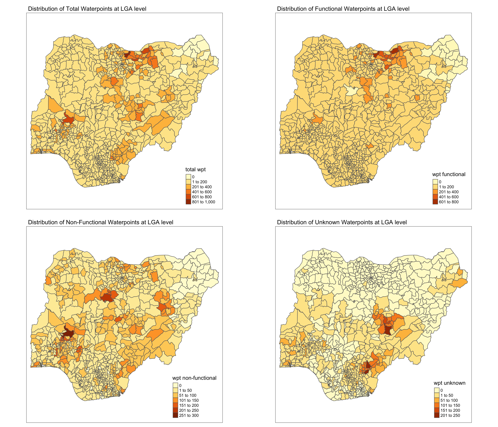
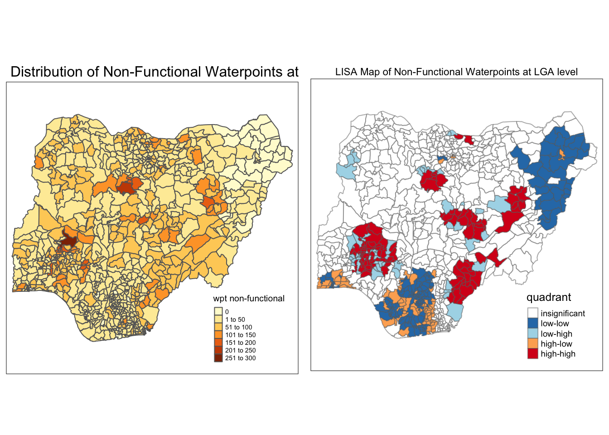
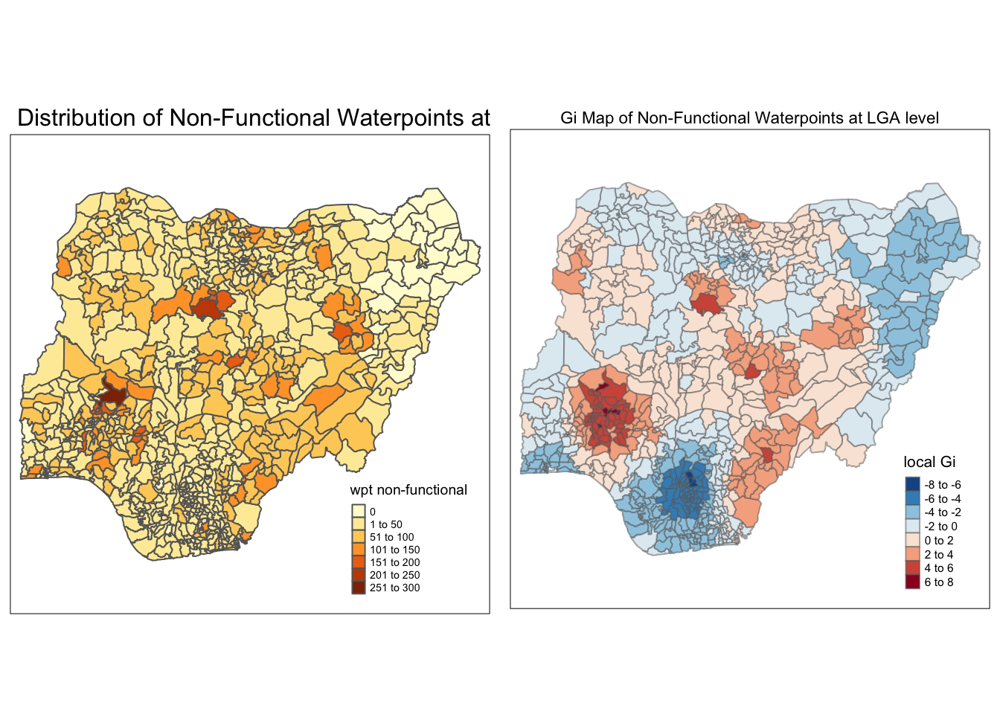

pacman::p_load(tmap, sf, tidyverse, spdep, funModeling)Take_home_Ex1
Overview
In this take-home exercise, I would apply appropriate global and local measures of spatial association techniques to reveals the spatial patterns of non-functional waterpoints. For the purpose of this study, Nigeria will be used as the study country.
Getting Started
In the code chunk below, p_load() of pacman package is used to install and load the following R packages into R environment:
sf: for importing, managing, and processing geospatial data
tidyverse: for performing data science tasks such as importing, wrangling and visualising data
tmap: for plotting choropleth map to show the distribution
spdep: for computing Global and Local Measure of Spatial Autocorrelation (GLSA)
funModeling: for rapid Exploratory Data Analysis
Importing Geospatial Data
In this take-home exericse, two data sets will be used, they are:
- geo_export (data from WPdx Global Data Repositories)
- geoBoundaries-NGA-ADM2 (Nigeria Level-2 Administrative Boundary, also known as Local Government Area, polygon features GIS data)
Importing water point geospatial data
The code chunk below imports the water point geospatial data (i.e. geo_export).
st_read()of sf package is used to import geo_export shapefile into R environment and save the imported geospatial data into simple feature data table.filter()of dplyr package is used to extract water point records of Nigeria.
wp <- st_read(dsn = "geodata",
layer = "geo_export",
crs = 4326) %>%
filter(clean_coun == "Nigeria")Next, write_rds() of readr package is used to save the extracted sf data table (i.e. wp) into an output file in rds data format. The output file is called wp_nga.rds and it is saved in geodata sub-folder.
wp_nga <- write_rds(wp,"geodata/wp_nga.rds")Importing Nigeria LGA boundary data
The code chunk below imports the LGA boundary data into R environment by using st_read() of sf package to import geoBoundaries-NGA-ADM2 shapefile into R environment and save the imported geospatial data into simple feature data table.
nga <- st_read(dsn = "geodata",
layer = "geoBoundaries-NGA-ADM2",
crs = 4326)Data Wrangling
Recoding NA values into string
In the code chunk below, replace_na() is used to recode all the NA values in status_cle field into Unknown.
wp_nga <- read_rds("geodata/wp_nga.rds") %>%
mutate(status_cle = replace_na(status_cle, "Unknown"))EDA
In the code chunk below, freq() of funModeling package is used to display the distribution of status_cle field in wp_nga.
freq(data=wp_nga,
input = 'status_cle')
Extracting Water Point Data
In this section, we will extract the water point records by using classes in status_cle field.
Extracting functional water point
In the code chunk below, filter() of dplyr is used to select functional water points and freq() of funModeling package is used to display the distribution.
wpt_functional <- wp_nga %>%
filter(status_cle %in%
c("Functional",
"Functional but not in use",
"Functional but needs repair"))freq(data=wpt_functional,
input = 'status_cle')
Extracting non-functional water point
In the code chunk below, filter() of dplyr is used to select non-functional water points and freq() of funModeling package is used to display the distribution.
wpt_nonfunctional <- wp_nga %>%
filter(status_cle %in%
c("Abandoned/Decommissioned",
"Abandoned",
"Non-Functional",
"Non functional due to dry season",
"Non-Functional due to dry season"))freq(data=wpt_nonfunctional,
input = 'status_cle')
Extracting water point with Unknown class
In the code chunk below, filter() of dplyr is used to select water points with unknown status.
wpt_unknown <- wp_nga %>%
filter(status_cle == "Unknown")Performing Point-in-Polygon Count
The code chunk below extracts the
nga_wp <- nga %>%
mutate(`total wpt` = lengths(
st_intersects(nga, wp_nga))) %>%
mutate(`wpt functional` = lengths(
st_intersects(nga, wpt_functional))) %>%
mutate(`wpt non-functional` = lengths(
st_intersects(nga, wpt_nonfunctional))) %>%
mutate(`wpt unknown` = lengths(
st_intersects(nga, wpt_unknown)))Saving the Analytical Data Table
The code chunk below uses mutate() of dplyr package to derive two fields namely pct_functional and pct_non-functional. Then, replace_na() is used to recode all the NaN values in pct_functional and pct_non-functional fields into 0.
nga_wp <- nga_wp %>%
mutate(pct_functional = `wpt functional`/`total wpt`*100) %>%
mutate(`pct_non-functional` = `wpt non-functional`/`total wpt`*100)
nga_wp <- nga_wp %>%
mutate(pct_functional = replace_na(pct_functional, 0)) %>%
mutate(`pct_non-functional`= replace_na(`pct_non-functional`, 0)) The code chunk below saves the tidy sf data table into rds format for subsequent analysis.
write_rds(nga_wp, "geodata/nga_wp.rds")Transforming of Projection
Using st_crs()，we could check the EPSG code of the data table. As it could be seen that the wrong EPSG code is used and we need to change it to 26391, which is the Projected Coordinate Systems of Nigeria.
nga_wp <- read_rds("geodata/nga_wp.rds")
st_crs(nga_wp)Coordinate Reference System:
User input: EPSG:4326
wkt:
GEOGCRS["WGS 84",
ENSEMBLE["World Geodetic System 1984 ensemble",
MEMBER["World Geodetic System 1984 (Transit)"],
MEMBER["World Geodetic System 1984 (G730)"],
MEMBER["World Geodetic System 1984 (G873)"],
MEMBER["World Geodetic System 1984 (G1150)"],
MEMBER["World Geodetic System 1984 (G1674)"],
MEMBER["World Geodetic System 1984 (G1762)"],
MEMBER["World Geodetic System 1984 (G2139)"],
ELLIPSOID["WGS 84",6378137,298.257223563,
LENGTHUNIT["metre",1]],
ENSEMBLEACCURACY[2.0]],
PRIMEM["Greenwich",0,
ANGLEUNIT["degree",0.0174532925199433]],
CS[ellipsoidal,2],
AXIS["geodetic latitude (Lat)",north,
ORDER[1],
ANGLEUNIT["degree",0.0174532925199433]],
AXIS["geodetic longitude (Lon)",east,
ORDER[2],
ANGLEUNIT["degree",0.0174532925199433]],
USAGE[
SCOPE["Horizontal component of 3D system."],
AREA["World."],
BBOX[-90,-180,90,180]],
ID["EPSG",4326]]nga_wp_1 <- st_transform(nga_wp,26391)
st_crs(nga_wp_1)Coordinate Reference System:
User input: EPSG:26391
wkt:
PROJCRS["Minna / Nigeria West Belt",
BASEGEOGCRS["Minna",
DATUM["Minna",
ELLIPSOID["Clarke 1880 (RGS)",6378249.145,293.465,
LENGTHUNIT["metre",1]]],
PRIMEM["Greenwich",0,
ANGLEUNIT["degree",0.0174532925199433]],
ID["EPSG",4263]],
CONVERSION["Nigeria West Belt",
METHOD["Transverse Mercator",
ID["EPSG",9807]],
PARAMETER["Latitude of natural origin",4,
ANGLEUNIT["degree",0.0174532925199433],
ID["EPSG",8801]],
PARAMETER["Longitude of natural origin",4.5,
ANGLEUNIT["degree",0.0174532925199433],
ID["EPSG",8802]],
PARAMETER["Scale factor at natural origin",0.99975,
SCALEUNIT["unity",1],
ID["EPSG",8805]],
PARAMETER["False easting",230738.26,
LENGTHUNIT["metre",1],
ID["EPSG",8806]],
PARAMETER["False northing",0,
LENGTHUNIT["metre",1],
ID["EPSG",8807]]],
CS[Cartesian,2],
AXIS["(E)",east,
ORDER[1],
LENGTHUNIT["metre",1]],
AXIS["(N)",north,
ORDER[2],
LENGTHUNIT["metre",1]],
USAGE[
SCOPE["Engineering survey, topographic mapping."],
AREA["Nigeria - onshore west of 6°30'E, onshore and offshore shelf."],
BBOX[3.57,2.69,13.9,6.5]],
ID["EPSG",26391]]Visualising the spatial distribution of water points
The code chunk below shows the spatial distribution of the absolute number of functional and non-functional waterpoints at LGA level.
total <- qtm(nga_wp_1, "total wpt") +
tm_layout(legend.height = 0.25,
legend.width = 0.35,
main.title = "Distribution of Total Waterpoints at LGA level",
main.title.size = 1.0)
wp_functional <- qtm(nga_wp_1, "wpt functional") +
tm_layout(legend.height = 0.25,
legend.width = 0.35,
main.title = "Distribution of Functional Waterpoints at LGA level",
main.title.size = 1.0)
wp_nonfunctional <- qtm(nga_wp_1, "wpt non-functional") +
tm_layout(legend.height = 0.25,
legend.width = 0.35,
main.title = "Distribution of Non-Functional Waterpoints at LGA level",
main.title.size = 1.0)
unknown <- qtm(nga_wp_1, "wpt unknown") +
tm_layout(legend.height = 0.25,
legend.width = 0.35,
main.title = "Distribution of Unknown Waterpoints at LGA level",
main.title.size = 1.0)
tmap_arrange(total, wp_functional, wp_nonfunctional, unknown, asp=1, ncol=2) 
Thematic Mapping for spatial distribution
The code chunk below shows the spatial distribution of functional and non-functional waterpoint rate (%) at LGA level.
percent_functional <- tm_shape(nga_wp_1) +
tm_fill("pct_functional",
n = 5,
style = "quantile") +
tm_borders(alpha = 0.5) +
tm_layout(main.title = "Distribution of Functional Waterpoints rate (%) at LGA level",
main.title.position = "center",
main.title.size = 0.7,
legend.height = 0.2,
legend.width = 0.35)
percent_nonfunctional <- tm_shape(nga_wp_1) +
tm_fill("pct_non-functional",
n = 5,
style = "quantile") +
tm_borders(alpha = 0.5) +
tm_layout(main.title = "Distribution of Non-functional Waterpoints rate (%) at LGA level",
main.title.position = "center",
main.title.size = 0.7,
legend.height = 0.2,
legend.width = 0.35)
tmap_arrange(percent_functional,
percent_nonfunctional,
asp=1,
ncol=2)
Observation: It could be seen that the waterpoint rates of both status (functional or non-functional) are not evenly distributed in Nigeria. Specifically, plenty of the counties at the northeastern region have high percentage of functional waterpoints. On the other hand, plenty of the counties at the southern region have high percentage of non-functional waterpoints.
Selection of appropriate spatial weighting method
For Nigeria, I have decided to use fixed distance method as from my observation, I think there is much variation in polygon size (relatively large polygons at the northeastern region and very small polygons at the southern part of the study area). To ensure a consistent scale of analysis, fixed distance spatial weighting method would be used.
Determine the cut-off distance
The code chunk below determines the upper limit for distance band by using the steps below:
Return a matrix with the indices of points belonging to the set of the k nearest neighbours of each other by using knearneigh() of spdep.
Convert the knn object returned by knearneigh() into a neighbours list of class nb with a list of integer vectors containing neighbour region number ids by using knn2nb().
Return the length of neighbour relationship edges by using nbdists() of spdep. The function returns in the units of the coordinates if the coordinates are projected, in km otherwise.
Remove the list structure of the returned object by using unlist().
coords <- st_centroid(st_geometry(nga_wp_1))
k1 <- knn2nb(knearneigh(coords))
k1dists <- unlist(nbdists(k1, coords, longlat = TRUE))
summary(k1dists) Min. 1st Qu. Median Mean 3rd Qu. Max.
2669 12834 20304 22084 27783 72139 The summary report shows that the largest first nearest neighbour distance is 72.14 km, so using this as the upper threshold gives certainty that all units will have at least one neighbour.
Computing fixed distance weight matrix
The code chunk below computes the distance weight matrix by using dnearneigh().
wm_d72 <- dnearneigh(coords, 0, 72140, longlat = TRUE)
wm_d72Neighbour list object:
Number of regions: 774
Number of nonzero links: 18130
Percentage nonzero weights: 3.026327
Average number of links: 23.42377 Plotting fixed distance weight matrix
The code chunk below plots the distance weight matrix. The red lines show the links of 1st nearest neighbours and the black lines show the links of neighbours within the cut-off distance of 72.14km.
plot(nga_wp_1$geometry, border="lightgrey")
plot(wm_d72, coords, add=TRUE)
plot(k1, coords, add=TRUE, col="red", length=0.08)Row-standardised weights matrix
The code chunk below assigns equal weights (style=“W”) to each neighboring polygon using nb2listw(). Zero policy is set to TRUE so that weights vectors of zero length are inserted for regions without neighbour in the neighbours list.
rswm_q <- nb2listw(wm_d72,
style="W",
zero.policy = TRUE)
rswm_qCharacteristics of weights list object:
Neighbour list object:
Number of regions: 774
Number of nonzero links: 18130
Percentage nonzero weights: 3.026327
Average number of links: 23.42377
Weights style: W
Weights constants summary:
n nn S0 S1 S2
W 774 599076 774 130.3659 3126.725Global Spatial Autocorrelation
As we know that the waterpoints are not evenly distributed, we would dive deeper to conduct global spatial autocorrelation to understand if there is sign of spatial clustering or outliers.
Maron’s I test
The code chunk below performs Moran’s I statistical testing using moran.test() of spdep.
moran.test(nga_wp_1$"wpt non-functional",
listw=rswm_q,
zero.policy = TRUE,
na.action=na.omit)
Moran I test under randomisation
data: nga_wp_1$"wpt non-functional"
weights: rswm_q
Moran I statistic standard deviate = 22.437, p-value < 2.2e-16
alternative hypothesis: greater
sample estimates:
Moran I statistic Expectation Variance
0.3264059335 -0.0012936611 0.0002133094 As the p value < 0.05, we could reject the null hypothesis that the there is spatial independence. A positive Moran I value (z-value) indicates that there is positive spatial autocorrelation (clustering), neighbors are similar and more alike than they would be under spatial randomness.
Computing Monte Carlo Moran’s I
The code chunk below performs permutation test for Moran’s I statistic by using moran.mc() of spdep. A total of 1000 simulation will be performed.
set.seed(1234)
bperm= moran.mc(nga_wp_1$"wpt non-functional",
listw=rswm_q,
nsim=999,
zero.policy = TRUE,
na.action=na.omit)
bperm
Monte-Carlo simulation of Moran I
data: nga_wp_1$"wpt non-functional"
weights: rswm_q
number of simulations + 1: 1000
statistic = 0.32641, observed rank = 1000, p-value = 0.001
alternative hypothesis: greaterAs the summary report shows that p-value < 0.05, we could reject the null hypothesis that the there is spatial independence. A positive Moran I value (z-value) indicates that there is positive spatial autocorrelation (clustering), neighbors are similar and more alike than they would be under spatial randomness.
Cluster and Outlier Analysis
Computing local Moran’s I
To compute local Moran’s I, the code chunks below uses localmoran() function of spdep. It computes Ii values, given a set of zi values and a listw object providing neighbour weighting information for the polygon associated with the zi values.
fips <- order(nga_wp_1$shapeName)
localMI <- localmoran(nga_wp_1$"wpt non-functional", rswm_q)
head(localMI) Ii E.Ii Var.Ii Z.Ii Pr(z != E(Ii))
1 0.361394136 -9.995243e-04 1.128237e-02 3.4117747 0.0006454144
2 0.074414950 -4.092463e-05 4.705097e-04 3.4325327 0.0005979717
3 1.258199847 -1.627684e-03 6.280738e-01 1.5896655 0.1119102304
4 -0.006652507 -5.427505e-05 4.151689e-03 -0.1024036 0.9184363392
5 0.082615173 -2.590965e-04 3.325093e-03 1.4372021 0.1506605779
6 0.006672593 -1.538445e-07 5.523369e-06 2.8392431 0.0045220690Mapping the local Moran’s I
The code chunk below appends the local Moran’s I dataframe (i.e. localMI) onto Nigeria SpatialPolygon DataFrame.
Nigeria.localMI <- cbind(nga_wp_1,localMI) %>%
rename(Pr.Ii = Pr.z....E.Ii..)Mapping local Moran’s I values
Using choropleth mapping functions of tmap package, we can plot the local Moran’s I values by using the code chunk below.
tm_shape(Nigeria.localMI) +
tm_fill(col = "Ii",
style = "pretty",
palette = "RdBu",
title = "local moran statistics") +
tm_layout(legend.height = 0.2,
legend.width = 0.35) +
tm_borders(alpha = 0.5)Mapping local Moran’s I p-values
The code chunks below produce a choropleth map of Moran’s I p-values by using functions of tmap package.
tm_shape(Nigeria.localMI) +
tm_fill(col = "Pr.Ii",
breaks=c(-Inf, 0.001, 0.01, 0.05, 0.1, Inf),
palette="-Blues",
title = "local Moran's I p-values") +
tm_layout(legend.height = 0.2,
legend.width = 0.35) +
tm_borders(alpha = 0.5) Mapping both local Moran’s I values and p-values
For effective interpretation, it is better to plot both the local Moran’s I values map and its corresponding p-values map next to each other.
The code chunk below will be used to create such visualisation.
localMI.map <- tm_shape(Nigeria.localMI) +
tm_fill(col = "Ii",
style = "pretty",
title = "local Moran's I statistics") +
tm_borders(alpha = 0.5) +
tm_layout(main.title = "Local Moran's I values for non-functional waterpoints",
main.title.position = "center",
main.title.size = 0.7)
pvalue.map <- tm_shape(Nigeria.localMI) +
tm_fill(col = "Pr.Ii",
breaks=c(-Inf, 0.001, 0.01, 0.05, 0.1, Inf),
palette="-Blues",
title = "local Moran's I p-values") +
tm_borders(alpha = 0.5) +
tm_layout(main.title = "Local Moran's I p-values for non-functional waterpoints",
main.title.position = "center",
main.title.size = 0.7)
tmap_arrange(localMI.map, pvalue.map, ncol=2)Observation: From the plot, it could be seen that clusters of non-functional waterpoints (with positive local Moran’s I value and a p-value of less than 0.05) are largely located at the northeastern region, southern region and part of the southwestern region.
Creating a LISA Cluster Map
The LISA Cluster Map shows the significant locations color coded by type of spatial autocorrelation. The first step before we can generate the LISA cluster map is to plot the Moran scatterplot.
Plotting Moran scatterplot
The code chunk below plots the Moran scatterplot of non-functional waterpoints by using moran.plot() of spdep.
nci <- moran.plot(nga_wp_1$"wpt non-functional", rswm_q,
labels=as.character(nga_wp_1$shapeName),
xlab="Non-Functional Waterpoints",
ylab="Spatially Lag Non-functional Waterpoints")Plotting Moran scatterplot with standardised variable
The code chunk below plots the Moran scatterplot with standardised variable by using scale() to centers and scales the variable.
nga_wp_1$Z.nonfunctional <- scale(nga_wp_1$"wpt non-functional") %>%
as.vector
nci2 <- moran.plot(nga_wp_1$Z.nonfunctional, rswm_q,
labels=as.character(nga_wp_1$shapeName),
xlab="z-Non-Functional Waterpoints",
ylab="Spatially Lag z-Non-Functional Waterpoints")Preparing LISA map classes
The code chunks below show the steps to prepare a LISA cluster map.
quadrant <- vector(mode="numeric",length=nrow(localMI))
nga_wp_1$lag_nonfunctional <- lag.listw(rswm_q, nga_wp_1$"wpt non-functional")
DV <- nga_wp_1$lag_nonfunctional - mean(nga_wp_1$lag_nonfunctional)
LM_I <- localMI[,1]- mean(localMI[,1])
signif <- 0.05
quadrant[DV <0 & LM_I>0] <- 1
quadrant[DV >0 & LM_I<0] <- 2
quadrant[DV <0 & LM_I<0] <- 3
quadrant[DV >0 & LM_I>0] <- 4
quadrant[localMI[,5]>signif] <- 0Plotting LISA map
The code chunk below builds the LISA map.
Nigeria.localMI$quadrant <- quadrant
colors <- c("#ffffff", "#2c7bb6", "#abd9e9", "#fdae61", "#d7191c")
clusters <- c("insignificant", "low-low", "low-high", "high-low", "high-high")
tm_shape(Nigeria.localMI) +
tm_fill(col = "quadrant",
style = "cat",
palette = colors[c(sort(unique(quadrant)))+1],
labels = clusters[c(sort(unique(quadrant)))+1],
popup.vars = c("")) +
tm_view(set.zoom.limits = c(11,17)) +
tm_borders(alpha=0.5)For effective interpretation, it is better to plot both the local Moran’s I values map and its corresponding p-values map next to each other.
The code chunk below will be used to create such visualisation.
Nigeria.localMI$quadrant <- quadrant
colors <- c("#ffffff", "#2c7bb6", "#abd9e9", "#fdae61", "#d7191c")
clusters <- c("insignificant", "low-low", "low-high", "high-low", "high-high")
LISAmap <- tm_shape(Nigeria.localMI) +
tm_fill(col = "quadrant",
style = "cat",
palette = colors[c(sort(unique(quadrant)))+1],
labels = clusters[c(sort(unique(quadrant)))+1],
popup.vars = c("")) +
tm_view(set.zoom.limits = c(11,17)) +
tm_borders(alpha=0.5) +
tm_layout(legend.height = 0.25,
legend.width = 0.35,
main.title = "LISA Map of Non-Functional Waterpoints at LGA level",
main.title.position = "center",
main.title.size = 0.7)
tmap_arrange(wp_nonfunctional, LISAmap,
asp=1, ncol=2)
Observation: From the plot, it could be seen that the southern and northeastern regions exhibit a LL autocorrelation cluster (low-value surrounded by low values). This indicate that these regions generally have relatively easy access to water.
On the other hand, part of the southwestern region exhibits a HH autocorrelation cluster (high-value surrounded by high values). Counties at this region may need further attention as both themselves and their neighbours have poor access to water.
Hot Spot and Cold Spot Area Analysis
Beside detecting cluster and outliers, localised spatial statistics can be also used to detect hot spot and/or cold spot areas. The term ‘hot spot’ has been used generically across disciplines to describe a region or value that is higher relative to its surroundings.
Getis and Ord’s G-Statistics
An alternative spatial statistics to detect spatial anomalies is the Getis and Ord’s G-statistics It looks at neighbours within a defined proximity to identify where either high or low values clutser spatially. Here, statistically significant hot-spots are recognised as areas of high values where other areas within a neighbourhood range also share high values too.
The analysis consists of three steps:
Deriving spatial weight matrix (already done in the previous sections)
Computing Gi statistics
Mapping Gi statistics
Computing Gi statistics using fixed distance
The code chunk below performs three tasks. First, it convert the output vector (i.e. gi.fixed) into r matrix object by using as.matrix(). Next, cbind() is used to join Nigeria’s data and gi.fixed matrix to produce a new SpatialPolygonDataFrame called Nigeria.gi. Lastly, the field name of the gi values is renamed to gstat_fixed by using rename().
fips <- order(nga_wp_1$shapeName)
gi.fixed <- localG(nga_wp_1$"wpt non-functional", rswm_q)
Nigeria.gi <- cbind(nga_wp_1, as.matrix(gi.fixed)) %>%
rename(gstat_fixed = as.matrix.gi.fixed.)Mapping Gi values with fixed distance weights
The code chunk below shows the functions used to map the Gi values derived using fixed distance weight matrix.
Gimap <-tm_shape(Nigeria.gi) +
tm_fill(col = "gstat_fixed",
style = "pretty",
palette="-RdBu",
title = "local Gi") +
tm_borders(alpha = 0.5) +
tm_layout(legend.height = 0.3,
legend.width = 0.35,
main.title = "Gi Map of Non-Functional Waterpoints at LGA level",
main.title.position = "center",
main.title.size = 0.7)
tmap_arrange(wp_nonfunctional, Gimap, asp=1, ncol=2)
Observation: From the plot, it could be seen that the southern and northeastern regions tend to be cold spots (location associated with relatively low values in surrounding locations). This indicate that these regions generally have low number of non-functional waterpoints and relatively easy access to water.
On the other hand, part of the southwestern region tend to be hot spots (location associated with relatively high values in surrounding locations). Counties at this region have poor access to water as both themselves and neighbors generally have high number of non-functional waterpoints. This is in alignment with the observation obtained from the LISA map and reinforces the point that the southwestern region would require more attention to look into the matter of poor water access.